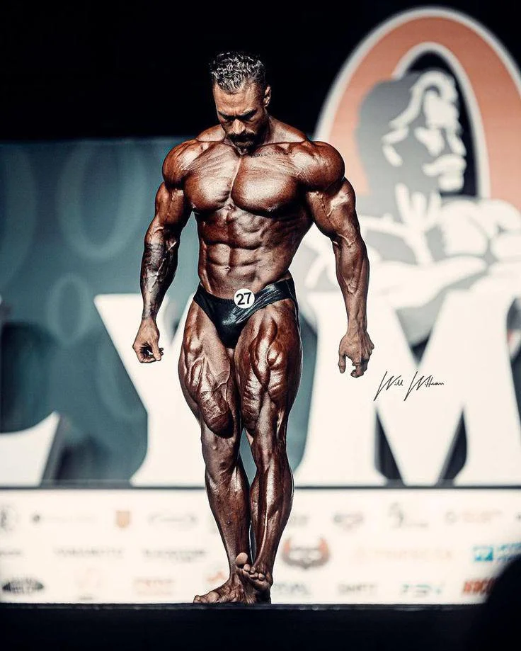

Chris Bumstead is a Canadian professional bodybuilder known for his incredible physique and dedication to the sport. He was born on August 2, 1994, in Ontario, Canada.
His dedication to bodybuilding started at a young age, and he has won multiple Mr. Olympia Classic Physique titles.
Chris is a fitness influencer and has a strong presence on social media where he shares his workouts, nutrition, and lifestyle.
Chris Bumstead has achieved remarkable success in his bodybuilding career. He has won the prestigious Mr. Olympia Classic Physique title multiple times.
His dedication to training, diet, and consistent hard work has made him one of the top bodybuilders in the world.
Chris Bumstead was born in Ontario, Canada. He developed an interest in bodybuilding at a young age and began training seriously in his late teens.
He showed early promise as a bodybuilder, and his hard work paid off as he rose to prominence in the bodybuilding world.
Chris follows a rigorous training regimen, focusing on both strength and aesthetics. His workouts are known for their intensity and dedication to perfecting every aspect of his physique.
His diet plays a crucial role in his success. Chris follows a strict nutrition plan, emphasizing high-quality proteins, healthy fats, and complex carbohydrates.
Chris's bodybuilding achievements include multiple Mr. Olympia Classic Physique titles, making him one of the top athletes in the sport.
| First Name | Last Name | Age | Occupation | Location | Date of Birth | Debut Date |
|---|